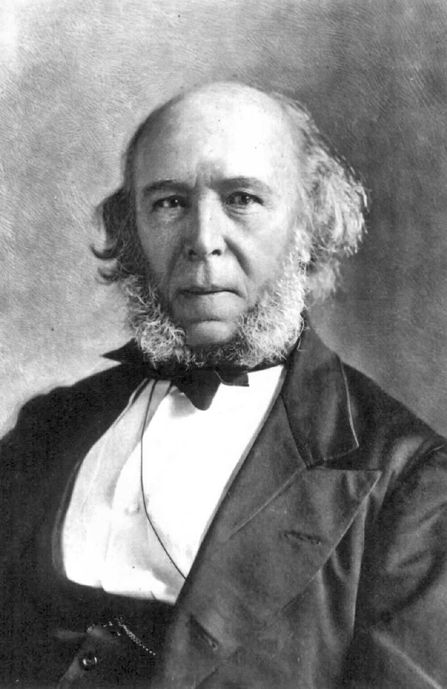

Cuando era adolescente y también cuando era un adulto joven, a Spencer le resultó difícil elegir una disciplina intelectual o profesional. Trabajó como ingeniero civil durante el auge de los ferrocarriles de la década de 1830, al tiempo de dedicar gran parte de su tiempo a escribir para revistas provinciales que eran inconformes en su religión y radicales en su política. De 1848 a 1853 se desempeñó como subeditor de la revista de libre comercio The Economist, tiempo durante el cual publicó su primer libro, Social Statics (1851), que predijo que la humanidad eventualmente se adaptaría completamente a las exigencias de la vida en la sociedad con la consecuente desaparición del estado.
Spencer argumentó que ambas teorías eran cuentas parciales de la verdad: repetidas asociaciones de ideas se plasman en la formación de cadenas específicas de tejido cerebral, y éstas se puedan transmitir de una generación a la siguiente por medio del mecanismo lamarckiano de la herencia de estructuras u órganos frecuentemente usadas por un individuo durante su vida. Principles of Psychology, a su juicio, haría para la comprensión de la mente humana lo que Isaac Newton había hecho para la comprensión de la materia.15 Sin embargo, el libro no tuvo éxito y el último de los 251 ejemplares de su primera edición no se vendió hasta junio de 1861.
El interés de Spencer en la psicología derivó de una preocupación más fundamental, que era establecer la universalidad de la ley natural.16 En común con otros de su generación, incluyendo los miembros de la tertulia de Chapman, estaba poseído con la idea de demostrar que era posible demostrar que todo en el universo - incluyendo la cultura humana, el lenguaje y la moral - podría explicarse por las leyes de validez universal. Esto fue en contraste con la opinión de muchos teólogos de la época, que insistían en que algunas partes de la creación, en particular, el alma humana, fueron más allá del ámbito de la investigación científica. Système de Philosophie Positive de Comte había sido escrito con la ambición de demostrar la universalidad de la ley natural, y Spencer deseaba seguir a Comte en la dimensión de su ambición. Sin embargo, Spencer se diferenció de Comte en la creencia de que era posible descubrir una única ley de aplicación universal, que identificaba con el desarrollo progresivo y que llamaría el principio de la evolución.
|
 |